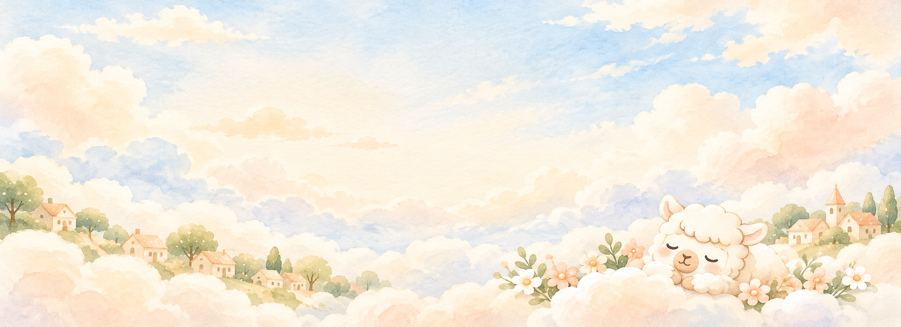
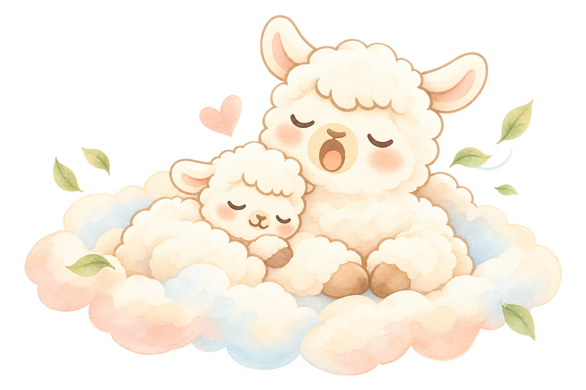
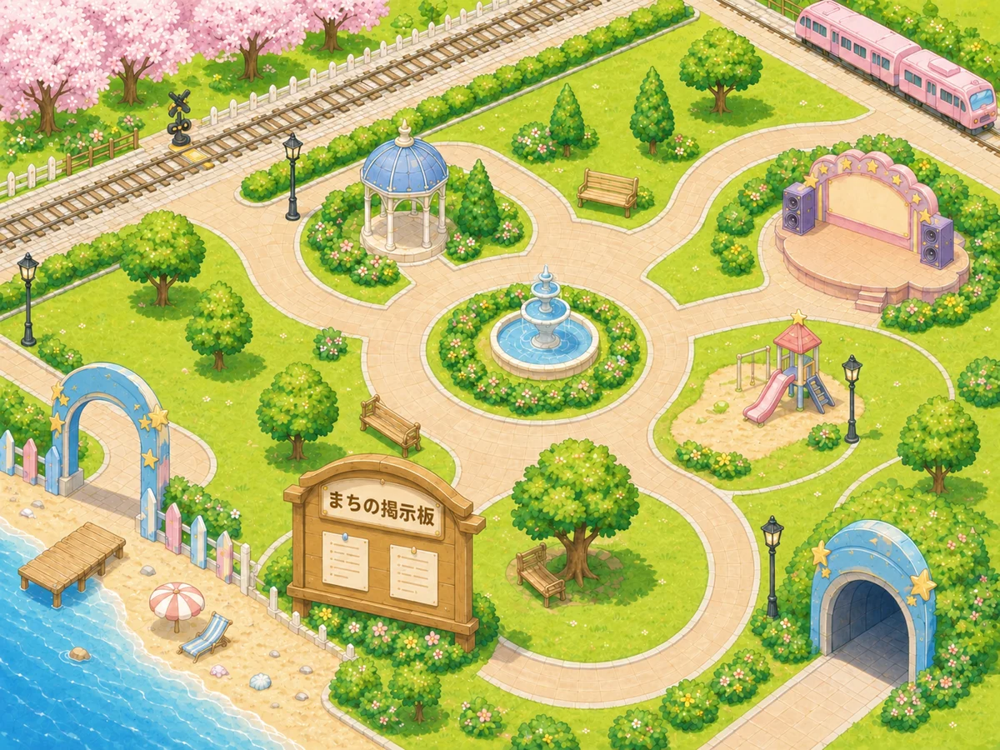
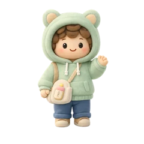
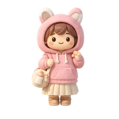
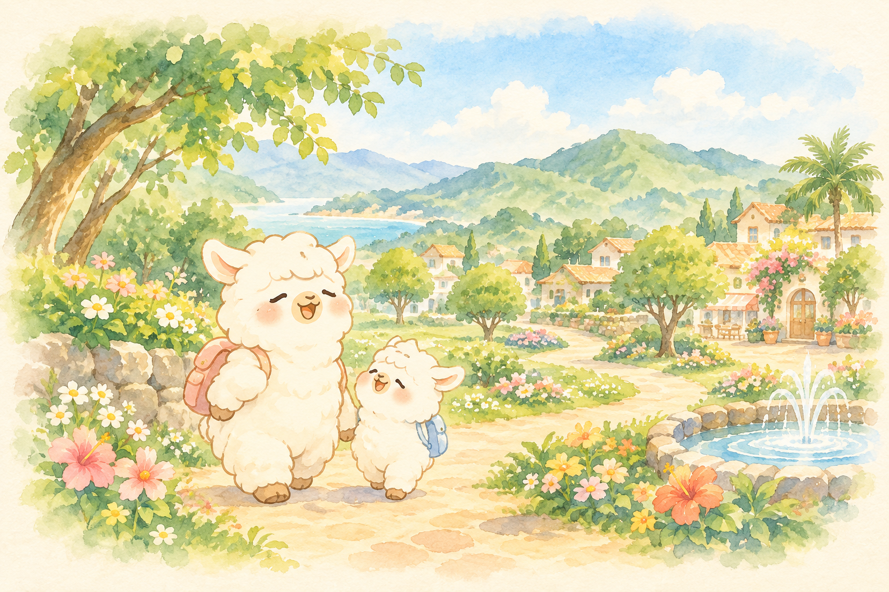

話したい日も、
眺めるだけの日も。
授業の合間に。寝かしつけのあとに。
誰かの気配がほしいな、と思ったときに。
長い文章を考えなくても、
毎日来られなくても、大丈夫。
子育て中の学生も、保護者も。
ふらっと、のぞいてみてください。
ここは、オンラインの子育てひろば。
いっしょに、
のんびりしませんか。
好きなアバターで、こんにちは。
今日の気持ちを、ちょっとだけ。



今日も、おつかれさま。うれしかったことも、ちょっと疲れたことも、
短いつぶやきに。
誰かの気持ちに、うなずきたくなったら、
「わかるよ」「おつかれさま」を、そっと。
もちろん、見ているだけでも。
広場の画像・映像は開発版です。
キャラクターは紹介用のイメージです。
気になる子を、ちょん。
ひろばの、その先へ。
今度、子どもと
どこへ行こう。
そんなときは、まちの掲示板へ。
宮崎の親子のお出かけ先を、
見つけてみませんか。

子どもの年齢、日程、無料や屋内など、
あなたに合う条件で、予定を探せます。
気になったものは「行ってみたい」に。
あとから、ゆっくり見返せます。
紹介画面のイベントはサンプルです。
開催日時・料金・予約方法は、主催者の公式情報をご確認ください。
ひらいて、
好きな姿をえらんで。
アプリのインストールはいりません。
スマホやPCのブラウザから、ひろばへ。
はじめてのときは、画面の案内に沿って
ニックネームなどを設定し、
好きなアバターを選んでください。
気になることも、ひとつずつ。
はじめての方へ。
雲の上で、ひと休み。
どんなことが、気になりますか？
気になる雲を、ちょん。
見るだけでも、大丈夫？
はい。投稿やリアクションは、自分がしたいときだけ。広場を眺めて過ごしたり、まちの掲示板からお出かけ先を探したりできます。
子育て中の学生も使えますか？
はい。子育て中の学生を含め、親・保護者の方に向けたオンライン広場です。学業や家事など、日々の暮らしの合間にご利用ください。
アプリのインストールは必要？
インストールは不要です。スマホやPCのブラウザで利用できます。初めて広場に入るときは、画面の案内に沿ってニックネームなどを設定してください。
どこのお出かけ情報がありますか？
宮崎の親子向けイベントや地域の居場所を紹介します。掲載されている情報の範囲や最新の内容は、アプリの「まちの掲示板」でご確認ください。
「行ってみたい」で予約できますか？
「行ってみたい」は、気になったイベントを保存する機能です。参加予約ではありません。開催日時、料金、予約方法などは、主催者の公式情報をご確認ください。
